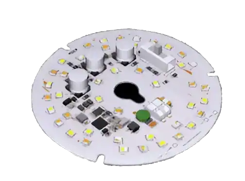
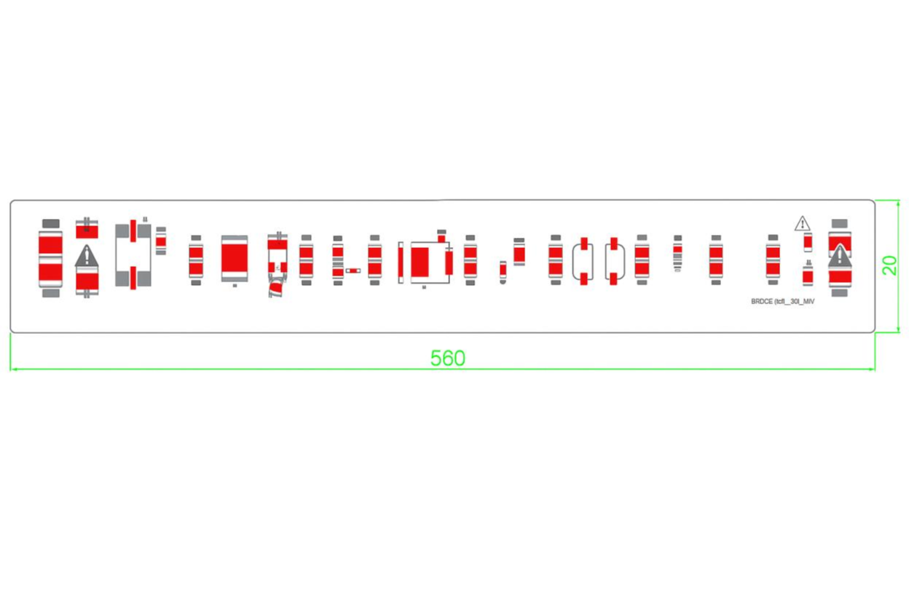
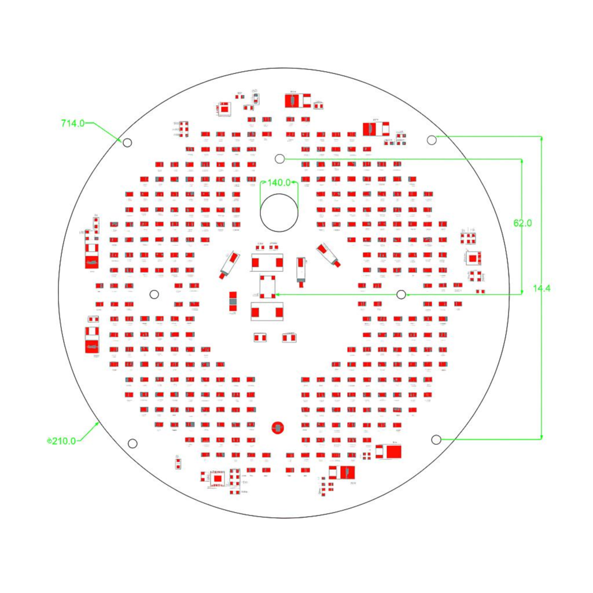
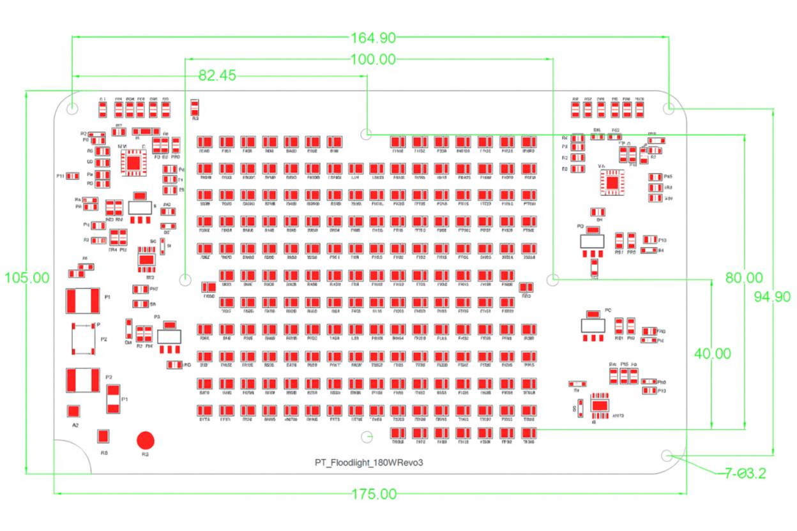

<!DOCTYPE html>
<html lang="en">

<head>
    <meta charset="UTF-8">
    <meta name="viewport" content="width=device-width, initial-scale=1.0">
    <title>Driver-on-Board LED Modules</title>
    <link rel="stylesheet" href="style.css">

</html>

<body>
    <!-- HERO BANNER -->
    <section class="hero-banner">
        <div class="hero-overlay">
            <div class="hero-content">
                <h1>Driver-on-Board LED Modules</h1>
                <p class="hero-subtitle">Power. Simplicity. Performance.</p>
                <a href="#contact" class="cta-red">Get Started</a>
            </div>
            <div class="hero-image-wrapper">
                
            </div>
        </div>
    </section>

    <!-- INTRO + FEATURES OVERVIEW -->
    <section class="section overview">
        <div class="container">
            <p class="section-intro">
                Adura’s Driver-on-Board (DOB) LED modules integrate high-efficiency LEDs and driver technology into one
                compact solution. Designed for performance-critical environments, our DOB modules deliver flicker-free
                illumination, long lifespan, and energy savings — all with universal compatibility.
            </p>

            <h2 class="section-title">Why Choose Adura DOB Modules?</h2>
            <div class="features-grid-four">
                <div class="feature-item">
                    <h3>Dimmable Light Modules</h3>
                    <p>Ideal for general-purpose and ambient lighting in residential or commercial settings.</p>
                </div>
                <div class="feature-item">
                    <h3>Flood Light Modules</h3>
                    <p>Designed for outdoor, landscape, and perimeter lighting with high lumen output.</p>
                </div>
                <div class="feature-item">
                    <h3>High Bay Modules</h3>
                    <p>Heavy-duty modules optimized for warehouses, factories, and industrial spaces.</p>
                </div>
                <div class="feature-item">
                    <h3>Linear Modules</h3>
                    <p>Slim, low-profile options perfect for office troffers and architectural lighting fixtures.</p>
                </div>
            </div>
            <br />
            <h2 class="section-title">Application Highlights</h2>
            <p>Adura’s DOB modules are built to meet a wide variety of project needs. Each configuration ensures
                performance, safety, and ease of integration:</p>
            <div class="features-grid">
                <div class="feature-item">
                    <h3>One-Chip Universal Driver</h3>
                    <p>Simplifies fixture design and reduces manufacturing complexity by integrating the LED driver
                        directly onto the module.</p>
                </div>
                <div class="feature-item">
                    <h3>Flicker-Free Output</h3>
                    <p>Ensures visual comfort in offices, healthcare, retail, and educational environments.</p>
                </div>
                <div class="feature-item">
                    <h3>High Thermal Efficiency</h3>
                    <p>Engineered with superior thermal management for longevity and consistent performance.</p>
                </div>
            </div>
        </div>
    </section>

    <!-- VISUAL MODULE GALLERY -->
    <section class="section gallery">
        <div class="container">
            <div class="section-header">
                <div class="text-content">
                    <h2>Linear Modules</h2>
                    <p>Engineered for uninterrupted rows of light in architectural and office environments.</p>
                </div>
                
            </div>

            <div class="section-header">
                <div class="text-content">
                    <h2>High Bay Modules</h2>
                    <p>Designed for maximum brightness and heat dissipation in industrial settings.</p>
                </div>
                
            </div>

            <div class="section-header">
                <div class="text-content">
                    <h2>Floodlight Modules</h2>
                    <p>Robust design with wide-angle illumination for outdoor and security applications.</p>
                </div>
                
            </div>
        </div>
    </section>

    <!-- DIMMING & OEM SUPPORT -->
    <section class="section support">
        <div class="container support-flex">
            <div class="support-column">
                <h2>Dimming Capabilities</h2>
                <p>Our DOB modules are compatible with multiple industry-standard dimming protocols:</p>
                <ul class="custom-list">
                    <li><strong>0-10V Dimming:</strong> Commercial-grade dimming with smooth transitions.</li>
                    <li><strong>PWM Dimming:</strong> High-precision digital dimming with minimal interference.</li>
                </ul>
            </div>

            <div class="support-column">
                <h2>Engineered for OEMs & Designers</h2>
                <p>
                    We go beyond standard modules — providing reliable, high-performance solutions backed by rapid
                    support and short lead times.
                    Whether you're building new fixtures or retrofitting existing ones, Adura is your trusted partner
                    for DOB technology.
                </p>
            </div>
        </div>
    </section>
</body>


</html